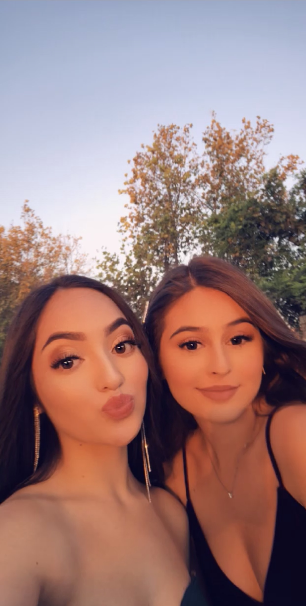
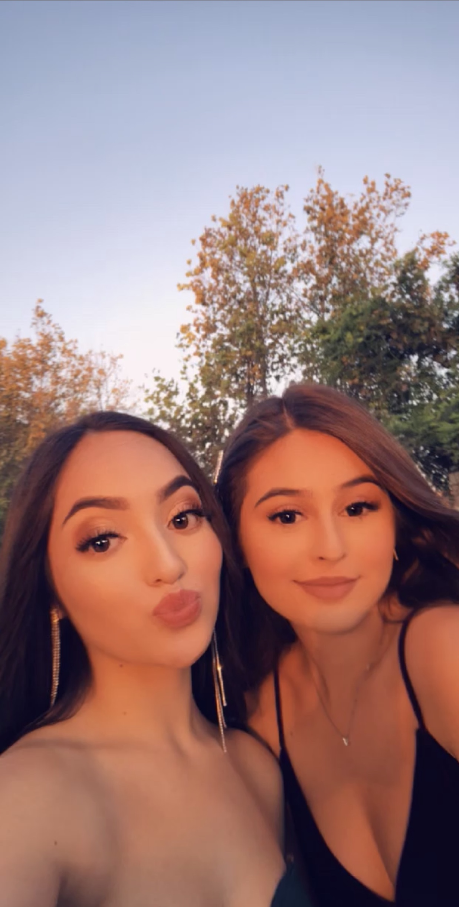

Carolyn Zepeda
I am a first year Political Science major working to get my degree so I can go off to Law school so I can become a Lawyer or an Attorney. I am currently a full time student as well as a part time sales associate at Old Navy. I have been working for this company for about 4 months already and I've already learned so much. I was trained to be on the cashier, to work the fitting rooms, and also learn how to order products for customers. I was not ready to have a job because I wanted to focus on school but with school there are obvious bills to pay for. I also needed to get better experience working with people so that when I do become a lawyer I am much more comfortable with the people around me.
In highschool, I was in this AVID program where it basically prepared me to focus, be organized, and get help applying to colleges as well as scholarships. I was in the program for two years and it was really he;pful. I honestly do not think I would’ve been here at UCR if it wasn’t for this program. This program not only taught me to become a more prepared student but also allowed me to get customer service experience by volunteering to a lot of organizations. This program taught me to be more engaging with people and it’s hard because I tend to be a really shy person but thankfully they taught me to be more confident.
Now that I am in college, I am really prepared and have more confidence when trying to meet new people to make friends with. Like I said in the beginning, I am a political science major and I hope to become a lawyer. I want to become a lawyer because I want to help people. It sounds cheesy but it makes me feel good knowing I've helped people and I know it pays off in the end. I have mental breakdowns here and there because school can be so draining and I know I will have my moments where I just want to give up, but I am always going to tell myself that there are people who will need me to defend them or help them. My passion and it took me a while to understand, but it really is to become a lawyer.
Experience
Sales Associate
• Organized clothes
• Helped customers in the fitting room
• Helped many apply for our credit cards
AVID member/student
• Responsible for getting a lot of volunteer hours
• Was exposed to many college information
Volunteer
• Helped many learn their prayers
• Helped many learn more about their religion
Education
UC Riverside
Portfolio



